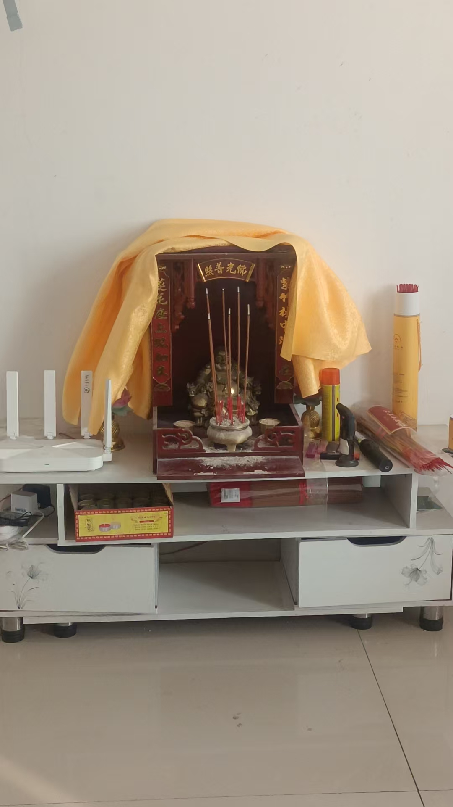

20251211商品房里面供佛
民间文化符咒术法 原始对话记录
祖先牌位不能跟神佛放在一起
佛龛需要经常清理打扫吗
肯定啊
时时保持清洁
用湿布擦会不会把您加持的五福神的光擦没了
干布
桌面用湿布
神像如果实在脏了，就用百分之五淡盐水，洗干净
新买来的金银首饰，挂坠，生肖，佛像，开光前，或者买来的时候，都要用百分之五淡盐水洗干净
盐有化煞除邪功能
这个没听说吧
生理盐水，注射用的，也是百分之五淡盐水
不过是蒸馏水
以下为编者整理的主题文章
编者整理 · 主题文章
商品房供佛：位置、清洁与盐水净像
一句话结论：楼房供佛要注意三件事：祖先牌位不与神佛同放、佛龛勤打扫且宜用干布、神像脏了用约百分之五淡盐水擦洗；新买的首饰、挂坠、佛像在开光前也宜用淡盐水净一净。
一、商品房供佛的常见疑问
楼房空间有限，供佛往往只有一角之地，于是"怎么摆、怎么打扫、脏了能不能擦"就成了高频问题。本页正是一问一答，把这几件事逐条说清。这里按民俗整理，宗教内容只作文化现象介绍。
二、祖先牌位与神佛要分开
记录开门见山："祖先牌位不能跟神佛放在一起。"这是民间供龛的一条基本原则——神佛居中、居上，祖先牌位另置。置放时通常尊卑有别、层次分明，避免把两套系统混在一处。参见本集群《土地神》中对宅内诸神的梳理。
三、佛龛的日常清洁
问佛龛要不要常打扫，答"肯定啊，时时保持清洁"。关键在于用对工具：
- 桌面：可用湿布擦；
- 神像与加持物：用干布；
- 有人担心"湿布会把加持的光擦没了"，记录给出的原则正是"像用干布、桌用湿布"。
这既照顾了洁净，也照顾了对像体的敬重。
四、淡盐水净像的做法
| 用途 | 配比 | 要点 |
|---|---|---|
| 神像实在太脏 | 约百分之五淡盐水 | 洗净后擦干 |
| 新买金银首饰、挂坠、生肖、佛像 | 约百分之五淡盐水 | 开光前先净 |
| 日常清洁 | 干布／湿布 | 像体用干布 |
记录提到一个便于掌握的比例参照：注射用生理盐水就是约百分之五的淡盐水（只是它用蒸馏水配）。据此，自家配淡盐水并不难。
五、开光前的准备
按记录，新买来的首饰、挂坠、生肖、佛像，在"开光前或买来的时候"都要先用淡盐水洗净，其说法是"盐有化煞除邪功能"。这一步在民间被视为开光工序的前置。开光本身的做法，可参见本集群《开光咒》与《土地公土地婆的请奉与开光流程》。
六、常见问题
问：湿布真的会把光擦没吗？ 这是民俗里的说法，无实证。记录的处理办法是折中：像体用干布、桌面用湿布。
问：淡盐水一定是百分之五吗？ 记录以"生理盐水也是百分之五"作参照，属便于记忆的讲法，实际不必苛求精确。
问：新买的佛像一定要先洗吗？ 这是民间习惯，非硬性规定；如照做，洗净后注意擦干。
七、提醒
- 祖先牌位与神佛分放，神像用干布、桌面用湿布。
- 淡盐水按约百分之五掌握，净后擦干。
- 本文只作民俗整理，不评断信仰，也不承诺任何功效。
说明与免责：本站为民间修炼、民俗文化与传统文化资料的整理与记录，内容源自传承者口传与个人修习体会，仅供文化交流与研究参考，不构成医疗、健康、投资或任何功效承诺。所述内容属传统术数范畴，请理性看待；如身体不适，请及时就医。请遵守法律法规与公序良俗。